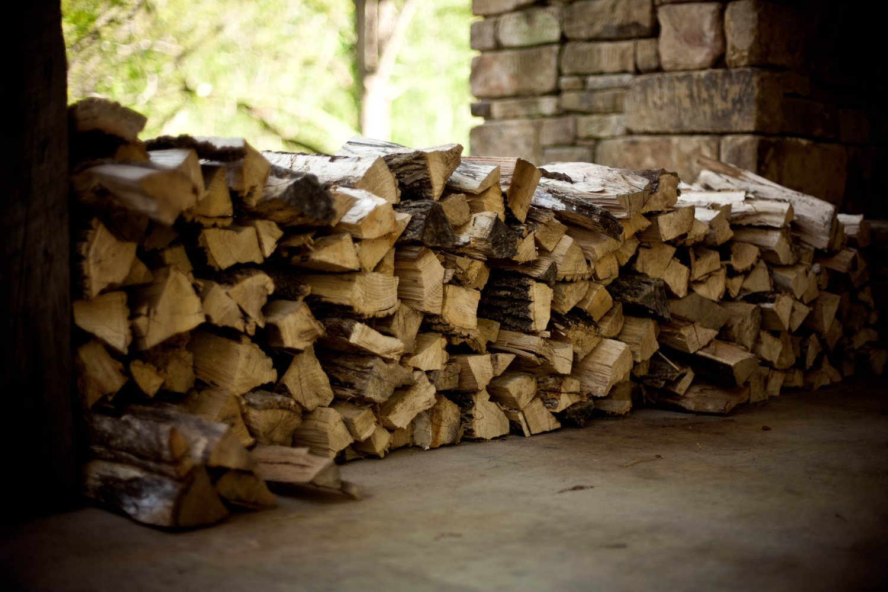

Lo que casi nadie arrienda
El refugio
de invierno
La pregunta que hace todo el que arrienda en junio es una sola y nadie la escribe: ¿la cabaña es helada? Detrás de esa pregunta hay cuatro o cinco detalles chicos que, contestados, convierten un arriendo barato de temporada baja en el mejor fin de semana del año.
-
La estufa: cuál es y cuánto calienta
falta: a leña, a pellet o eléctrica
No es lo mismo una salamandra que un calefactor eléctrico que sube la cuenta de la luz. Y si la estufa calienta la cabaña entera o sólo el living, eso también se dice: el que duerme en la pieza del fondo lo va a notar.
-
La leña: cuánta viene y qué pasa cuando se acaba
falta: cuánta y si se repone
«Leña incluida» sin cantidad es una promesa que se rompe la segunda noche. Un saco, dos, o «la que se ocupe» son tres respuestas distintas y las tres sirven — escritas.
-
Dónde se seca la ropa mojada
falta: confirmar
En Licán Ray en invierno llueve, y una familia vuelve de la calle con seis pares de zapatillas empapados. Un tendedero cerca de la estufa es el detalle más agradecido y el que menos aparece publicado.
-
Cómo se prende, explicado sin hacer sentir tonto a nadie
falta: si dejan instrucciones
Media clientela viene de ciudad y nunca ha prendido una estufa a leña. Una hoja plastificada al lado, con tres pasos y un dibujo, evita la llamada de las once de la noche y una mala noche.
-
Si la cabaña llega tibia
falta: confirmar
Encender la estufa una hora antes de que llegue el huésped no cuesta nada y es el gesto por el que se escriben las reseñas de cinco estrellas. Si ya lo hacen, es lo primero que hay que poner en la página.
-
El agua caliente
falta: califont a gas o eléctrico
En invierno esto se convierte en el reclamo número uno. Decir cuánto aguanta y si alcanza para cuatro duchas seguidas es más valioso que cualquier foto.
Seis detalles. Ninguno cuesta plata y ninguno aparece en las páginas de la competencia, porque todas están escritas pensando en enero.

La pregunta que no se hace por vergüenza
¿Cuánta leña viene, y qué pasa cuando se acaba?
«Leña incluida» sin decir cuánta es la promesa que se rompe la segunda noche: se saca la cuenta, se ve que no alcanza, y hay que salir a las once a buscar. Un número —tantos kilos, o tantas cargas— y una frase que diga si se repone y a qué precio, resuelven la duda antes de que exista. Es un dato que el dueño sabe de memoria y que ninguna cabaña de la zona publica.
Escrito para el dueño, a la vista
Un solo
nombre
Buscándolos en internet aparecen dos nombres distintos para lo que parece ser el mismo negocio. Puede ser un cambio de nombre que quedó a medias, dos fichas creadas en momentos distintos, o dos cosas separadas. No lo sé, y no lo voy a suponer.
Nombre A
Mi Refugio
Es el que usa esta demo, por ser el que aparece primero en la ficha con reseñas.
Nombre B
Cabañas Licán
Aparece asociado al mismo lugar. falta: confirmar la relación entre los dos
Por qué esto importa más de lo que parece
- Las reseñas se reparten. Si hay dos fichas, cada cliente califica en una de las dos y ninguna llega a tener el número que el negocio se ganó. Setenta y dos reseñas en una ficha pesan mucho más que treinta y seis en cada una.
- El que los recomienda se confunde. «Arrendé en Mi Refugio» y «arrendé en Cabañas Licán» suenan a dos lugares distintos, y el boca a boca —que en un pueblo es la mitad del negocio— se parte por la mitad.
- Google no sabe cuál mostrar. Cuando hay dos fichas del mismo lugar, ninguna de las dos se posiciona bien. Ordenarlo es gratis y es lo primero que habría que hacer, antes que cualquier página.
Esta sección está escrita a la vista a propósito. Si el dueño confirma cuál es el nombre vigente, la página se cambia en dos minutos y esta sección desaparece. Mientras tanto, es más honesto decir que hay una duda que elegir uno y actuar como si fuera obvio.
La estufa se prende antes de que usted llegue
No cuando llega — son dos horas de diferencia
Para reservar, hoy se llama
+56 9 9821 6215
Es el número publicado en su ficha de Google.